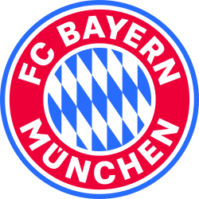

El Bayern de Munic és un dels clubs més importants del futbol europeu i ha tingut grans golejadors al llarg de la seva història. Molts jugadors han destacat a la Champions League pels seus gols i per les seves actuacions en aquesta competició.
En aquesta pàgina es mostren deu dels màxims golejadors del Bayern de Munic a la Champions League, amb el nombre de partits, els gols i la nacionalitat de cada jugador.

| Posició | Jugador | País | Partits | Gols |
|---|---|---|---|---|
| 1 | Robert Lewandowski | Polònia | 78 | 69 |
| 2 | Thomas Müller | Alemanya | 163 | 57 |
| 3 | Harry Kane | Anglaterra | 41 | 37 |
| 4 | Arjen Robben | Països Baixos | 70 | 25 |
| 5 | Mario Gómez | Alemanya | 39 | 23 |
| 6 | Giovane Élber | Brasil | 60 | 21 |
| 7 | Claudio Pizarro | Perú | 62 | 18 |
| 8 | Serge Gnabry | Alemanya | 70 | 18 |
| 9 | Franck Ribéry | França | 87 | 18 |
| 10 | Roy Makaay | Països Baixos | 32 | 17 |
Harry Kane, davanter del Bayern de Munic, va guanyar el Baló d'Or 2026 i és un dels màxims golejadors del club a la Champions League.